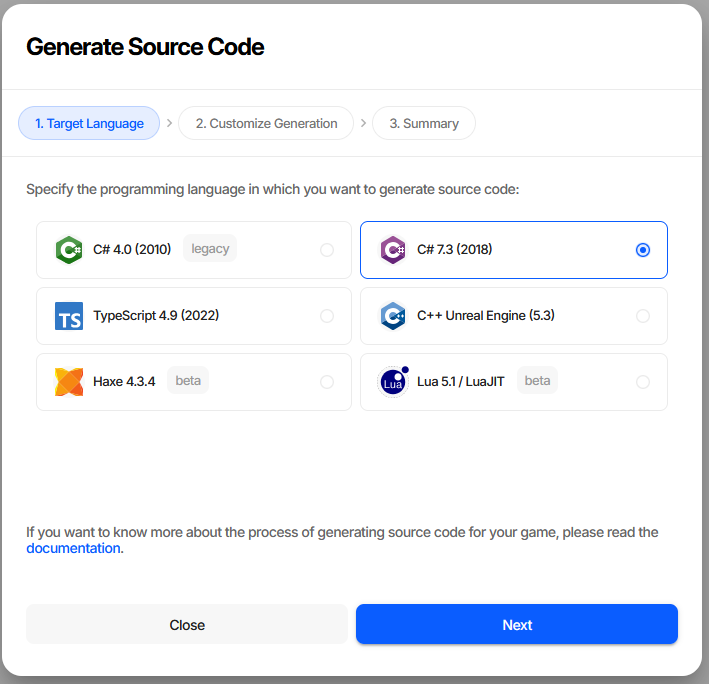
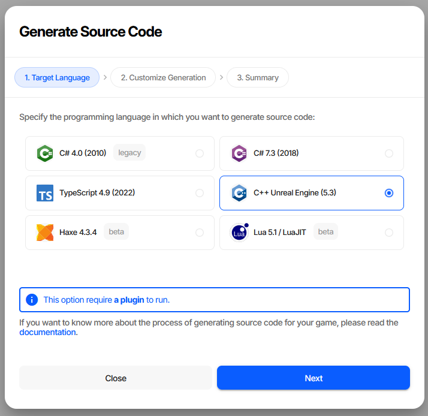
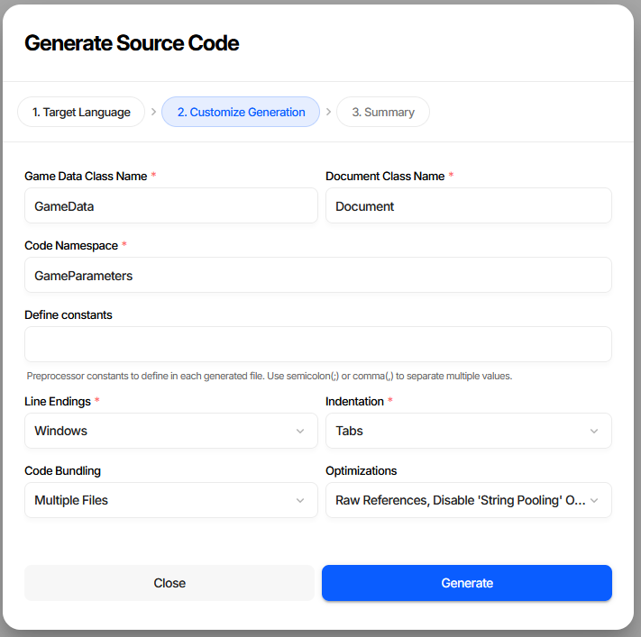
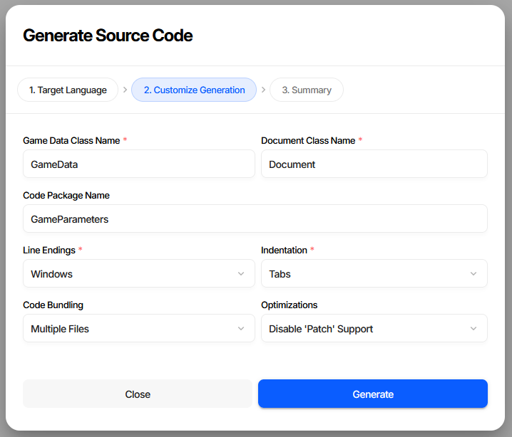
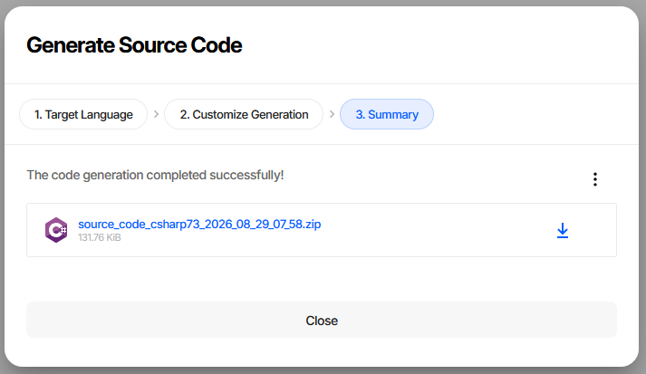
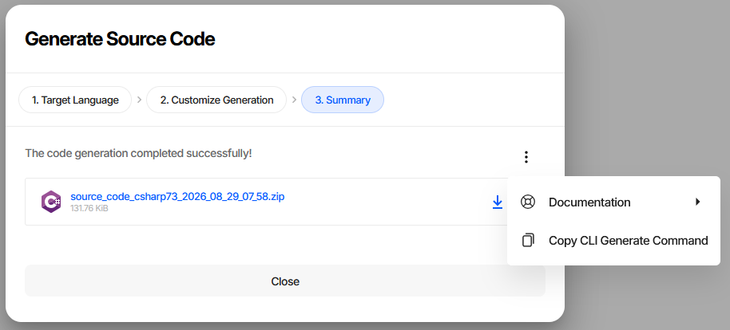

Generating Source Code
Generated source code is how game data reaches the game. Charon reads the schemas and produces classes, enums, and a loader for the target language, so the game accesses data through typed members instead of parsing JSON by hand.
It runs in three places: the wizard in the editor, a button in the Unity and Unreal Engine plugins, and the
GENERATE commands in the CLI. All three produce the same code from the same options.
Language Support Tiers
The source code generation system is organized into three support tiers:
Tier 3 (Basic): Schema types/enums are generated, basic game data class, localization language selection, document references, and built-in JSON reader.
Tier 2 (Advanced): Includes all Tier 3 features, plus: formulas parsed into AST (no interpreter), built-in Json/MessagePack reader, full game data class with helper functions/classes, and union types. Supported by Haxe.
Tier 1 (Complete): Includes all Tier 2 features, plus: full formulas support (ASP interpreter), patching during load support, and language idiomatic features. Supported by C# 4.0, C# 7.3, TypeScript, and UE C++.
Feature |
C# |
TypeScript |
C++ (UE) |
Hax️e |
Lua |
|---|---|---|---|---|---|
Classes |
✔️ |
✔️ |
✔️ |
✔️ |
✔️ |
Enums |
✔️ |
✔️ |
✔️ |
✔️ |
✔️ |
Build-in Formatters |
✔️ |
✔️ |
✔️ |
✔️ |
|
— JSON |
✔️ |
✔️ |
✔️ |
✔️ |
|
— MessagePack |
✔️ |
✔️ |
✔️ |
✔️ |
|
Localization |
✔️ |
✔️ |
✔️ |
✔️ |
✔️ |
Patching |
✔️ |
✔️ |
✔️ |
✔️ |
|
Formulas |
✔️ |
✔️ |
✔️ |
✔️ |
|
— Parsed AST |
✔️ |
✔️ |
✔️ |
✔️ |
|
— Interpeter |
✔️ |
✔️ |
✔️ |
||
— Lambdas |
✔️ |
✔️ |
The Generation Wizard
Generate Source Code on the dashboard opens the wizard. Project Settings → Source Code has the same button.
Step 1. Target Language

Each entry names the language version the generated code targets. Markers say what to expect: legacy on C# 4.0, which exists for old Unity versions, and beta on Haxe and Lua.
Two targets need something on the game side, and the wizard says so when they are selected:

Step 2. Customize Generation

Field |
Meaning |
|---|---|
Game Data Class Name |
Name of the root class the game loads and then reads collections from. Must be a valid identifier. |
Document Class Name |
Name of the base class every document type inherits from. |
Code Namespace |
Namespace the generated types are placed in. Reads Code Package Name for Haxe, is required for the two C# targets, and is absent for TypeScript, UE C++, and Lua, which have no equivalent. |
Define constants |
Preprocessor constants written into each generated file, separated by |
Line Endings |
Windows or Unix. Worth matching to whatever the repository already stores, so regeneration does not produce a diff on every line. |
Indentation |
Tabs, 2 spaces, or 4 spaces. |
Code Bundling |
One file for everything, or a file per type. UE C++ is always multiple files. |
Optimizations |
A multi-select, described below. |
Which fields appear depends on the target. Haxe, for instance, has a package name instead of a namespace and no preprocessor constants:

Optimizations
Two of these add work at load time and seven remove code from the output. Everything removed is code the game would otherwise carry unused, so on a large project the difference in compile time and binary size is worth having - but each one takes a feature away, and the loader will not warn you at runtime.
Option |
Effect |
|---|---|
Eager Reference Resolution |
Resolves and validates every reference while loading, instead of on first access. Costs load time, and turns a broken reference into a failure at startup rather than mid-game. |
Raw References |
Drops the helper members that follow a reference to the referenced document, keeping the raw reference accessors only. |
Raw Localized Texts |
Drops the helpers that return the text for the current language, keeping accessors that hand back the whole set of translations. |
Raw Composite Types |
Drops the parsed accessors for text properties carrying a vector, rectangle or tags editor. The
property keeps its original name and string type instead of moving to a |
Disable ‘String Pooling’ Optimization |
Stops reusing identical short strings while loading. Slightly faster, more memory. |
Disable JSON Serialization |
Omits the JSON reader. Only safe if the game ships Message Pack data. |
Disable MessagePack Serialization |
Omits the Message Pack reader. Only safe if the game ships JSON. |
Disable ‘Patch’ Support |
Omits the patch-application code, which is a large part of the output and is used for modding and patching. |
Disable ‘Document Id’ Enums Generation |
Omits the enums listing the ids of every document known at generation time. Cuts compile time noticeably on big projects, at the cost of losing the compile-time-checked id constants. |
String pooling and the two serializer options are not available for Lua. Raw composite types is not
available for Unreal Engine C++, which always behaves as if it were on - a UPROPERTY cannot be
renamed, so those properties keep their name and get a separate GetParsed... accessor instead.
Step 3. Summary

The result is a zip named after the target and the moment it was generated. Download it and unpack it into the game project.

The ... menu carries Copy CLI Generate Command, which puts the equivalent command line on the
clipboard with every option filled in exactly as the wizard was configured. It is the fastest way to move a
configuration that works into a build script; Documentation links to the reference for the language just
generated.
From the Unity and Unreal Engine Plugins
Both plugins generate code with a single button, without the wizard.
Unreal Engine generates immediately, using default settings. There are no customization options in the plugin at the moment. See Creating Game Data.
Unity works the same way, except the options live in the Inspector of the game data asset - set them there, then press the button. See Unity Overview.
Either way, regenerate after changing the structure of the data - adding a property, renaming a schema - and not after merely editing values.
From the CLI
One GENERATE command per language, taking the same options as the wizard:
dnx dotnet-charon -- GENERATE CSHARPCODE \
--dataBase "c:\my app\gamedata.json" \
--outputDirectory "c:\my app\scripts" \
--namespace "MyGame.Parameters" \
--gameDataClassName GameData \
--splitFiles \
--clearOutputDirectory
Wizard field |
CLI parameter |
|---|---|
Game Data Class Name |
|
Document Class Name |
|
Code Namespace / Code Package Name |
|
Define constants |
|
Line Endings |
|
Indentation |
|
Code Bundling |
|
Optimizations |
|
The CLI has two parameters the wizard has no use for, because it writes into a directory rather than a zip:
--outputDirectory for the destination, and --clearOutputDirectory to delete the previously generated
files first. The second one only removes files carrying the <auto-generated> marker, so hand-written
code in the same directory survives.
Regenerating from CI on every change to the data keeps the code and the data from drifting apart - see CI/CD.